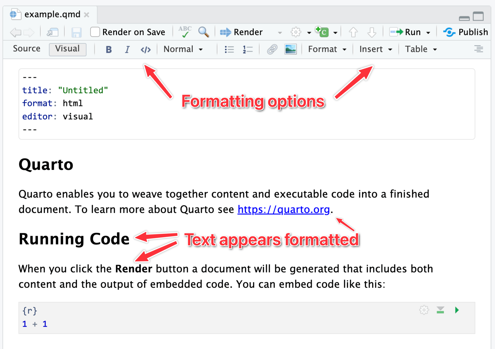
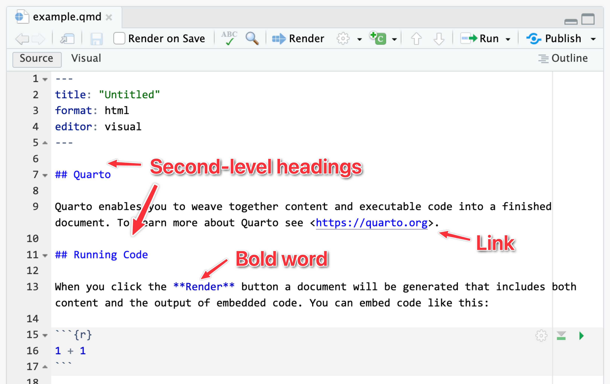
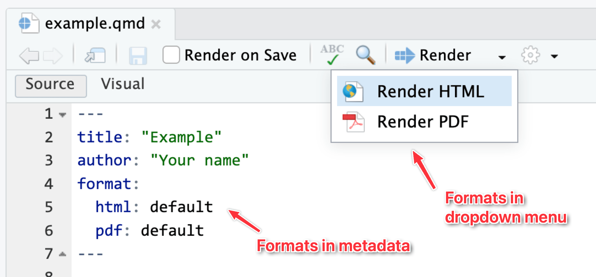
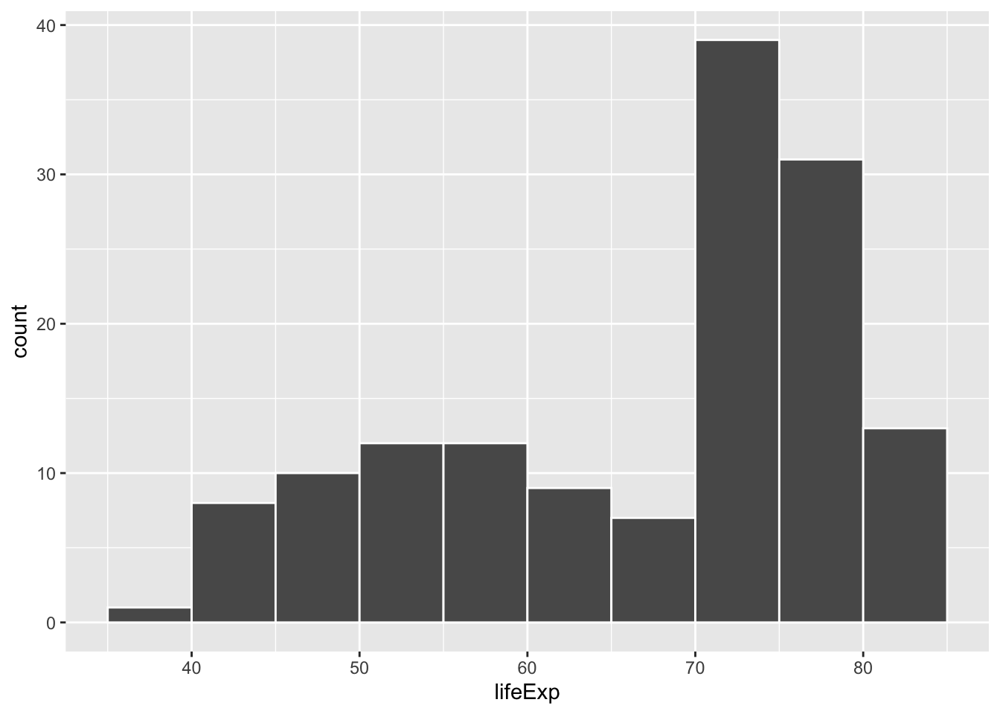
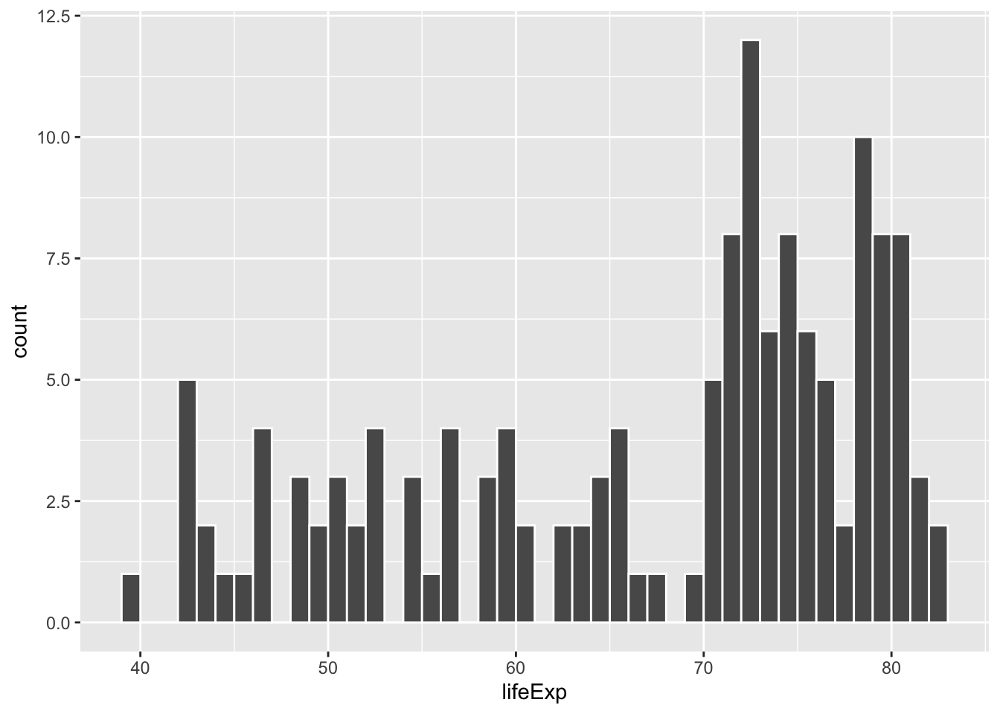
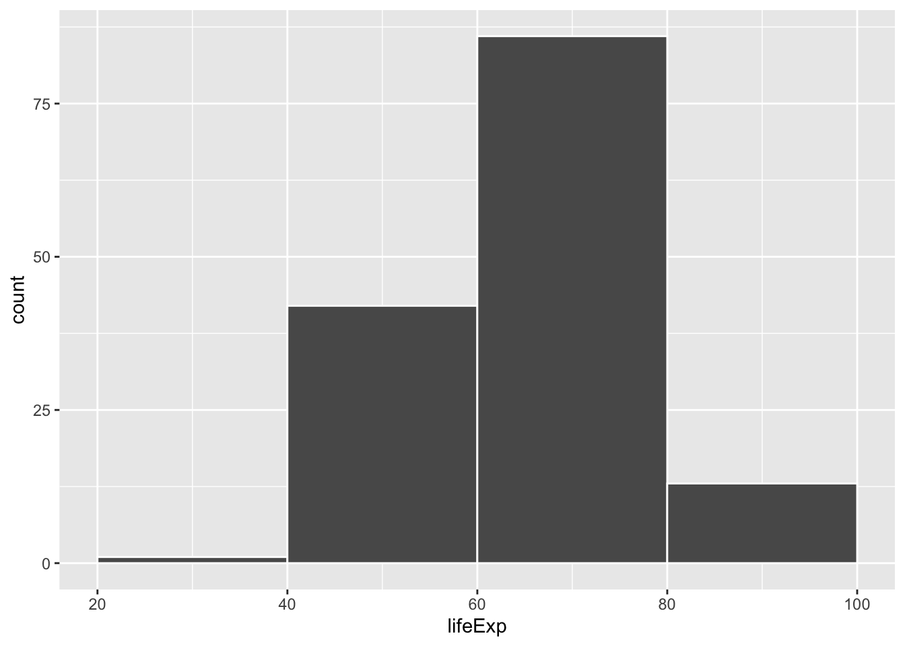
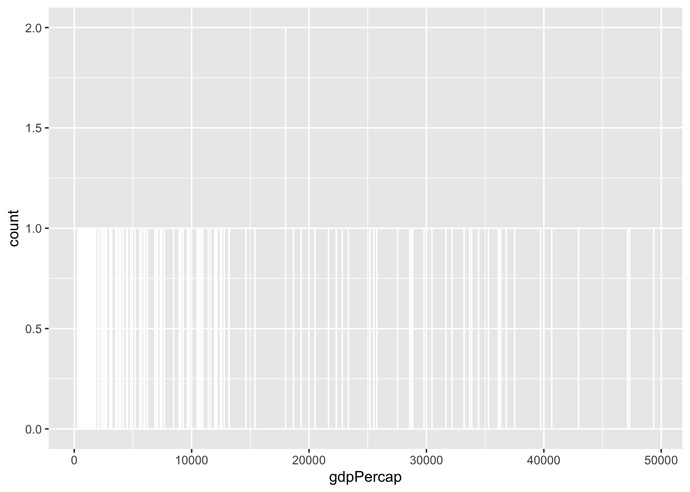
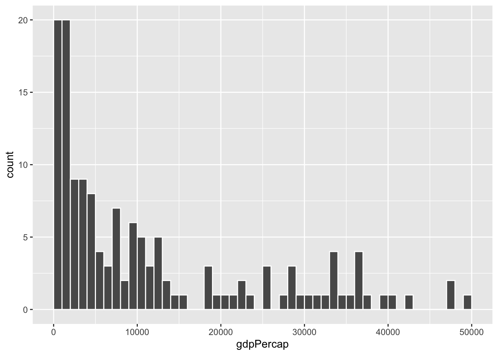
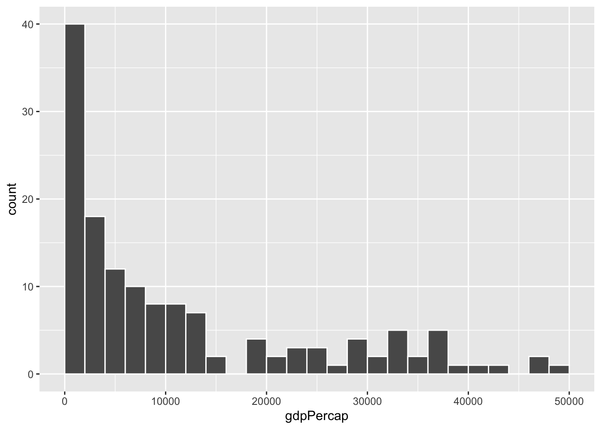
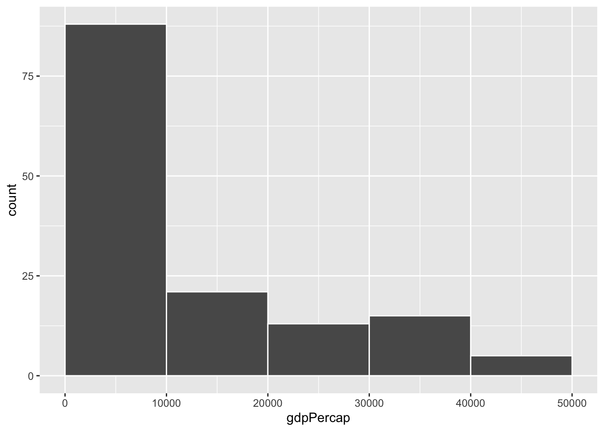

penguins |>
group_by(island) |>
summarize(
avg_weight = mean(body_mass),
num_penguins = n()
)
## # A tibble: 3 × 3
## island avg_weight num_penguins
## <fct> <dbl> <int>
## 1 Biscoe 4719. 163
## 2 Dream 3719. 123
## 3 Torgersen 3709. 47Week 1 tips and FAQs
FAQs
Hi everyone!
I have few important FAQs and tips I’ve been giving as feedback to many of you:
What’s the difference between Source and Visual mode in the editor window?
When writing with Quarto markdown, RStudio has a neat feature that makes it easier to see what you’re actually doing. Recall from the Markdown guide that Markdown is a way to mark up text—it lets you make things bold or italic, add images, make headings, make lists, and so on.
You’re all familiar with writing in Word or in Google Docs, where if you want something to be bold, you select the text and click on a button to make it bold (or use the ctrl + B or ⌘B keyboard shortcut).
In Markdown, if you want something bold, you put it between two asterisks like this:
This is **bold stuff**.…and when you render it, it’ll show up like this:
This is bold stuff.
It can be tricky to remember all the different Markdown-y things you can use, so RStudio has a visual mode to help you! Visual mode gives you a Word-like menu for formatting text, and it shows the formatted text in the editor window. Behind the scenes, it’s really using Markdown—if you switch to source mode, you can see the underlying Markdown, like ## A heading or This is *italic*.
Here’s the same document in visual mode:

…and source mode:

I personally like to use source mode when working with R, and I’ll often switch to visual mode when writing.
See this for full details about what the visual mode can do.
What’s the difference between R Markdown and Quarto?
In the videos, you’ll see examples of using R Markdown (i.e. files with an .Rmd extension), but in the instructions for the exercises and the answer keys on Moodle, I have you use Quarto (i.e. files with a .qmd extension) instead. Why?
Quarto Markdown is regular Markdown with R code and output sprinkled in. You can do everything you can with regular Markdown, but you can incorporate graphs, tables, and other code output directly in your document. You can create HTML, PDF, and Word documents, PowerPoint and HTML presentations, websites, books, and even interactive dashboards with Quarto. This whole course website is created with Quarto.
Quarto’s predecessor was R Markdown and worked exclusively with R (though there are ways to use other languages in document). Quarto is essentially “R Markdown 2.0,” but it is designed to be language agnostic. You can use R, Python, Julia, Observable JS, and even Stata code all in the same document. It is magical.
The core idea behind R Markdown—that you can intersperse text with code chunks—is the same in Quarto, and the syntax is the same too. Everything R Markdown-related in the videos should work just the same in Quarto.
The wording for converting Quarto files to PDF/HTML/Word/whatever is slightly different too. In R Markdown, the process is called “knitting” (because the R package for doing that is called {knitr}, a pun on knitting/stitching together code, tables, images, and text). In Quarto it’s called “rendering”. Knitting and rendering are the same thing. In the videos when you hear me say “knit to PDF”, that really means “render to PDF”.
See here for some of the cool things you’ll be able to do with Quarto documents.
Why don’t I have options to render to PDF (or Word or HTML)?
If you don’t specify any format settings in the top part of your document (i.e. the metadata), Quarto documents by default render to HTML. The “Render” button at the top of the editor window won’t have a dropdown menu for switching to other formats—if you click on it, it’ll render to HTML.

The dropdown menu for that “Render” button will show whichever possible formats you define in the document. Like here, I’ve added HTML and PDF files as possible formats (using their default settings), so they appear in the dropdown:

In all your exercises, I’ve included four different formats in the starter .qmd file for you, like this:
format:
html:
toc: true
typst:
toc: true
pdf:
toc: true
docx:
toc: trueThat makes it so that HTML, PDF, typst (fancier, faster PDFs), and Word all appear in the dropdown menu. Additionally, it enables an automatic table of contents (toc: true) in each format. There are a ton of different format-specific settings you can change—see here for more details and examples.
Rendered document format for Moodle
Quarto is great and wonderful in part because you can write a document in one .qmd file and have it magically turn into an HTML file, a Word file, or a PDF (or if you want to get extra fancy later, a slideshow, a dashboard, or even a full website).
Moodle doesn’t like HTML files, though. It won’t show images that get uploaded because of weird server restrictions or something. So when you submit your exercises, make sure you render as PDF or Word.. Don’t upload HTML files, and don’t upload your .qmd file.
I’d recommend rendering as HTML often as you work on the exercise. Rendering as PDF takes a few extra seconds, and rendering as Word is a hassle because Word gets mad if you have a previous version of the document open when rendering. HTML is pretty instantaneous. When I work on Quarto files, I put a browser window on one of my monitors and RStudio on the other and render and re-render often to HTML while working. Once I’m done and the document all works and the images, tables, text, etc. are all working, I’ll render as PDF or Word or whatever final format I want.
What is this “typst” thing that we can render to?
Notetl;dr
If you want to make a PDF, you can use either LaTeX or Typst. Typst is newer and faster and easier to customize; LaTeX has been around for decades and is standard and ubiquitous, but it can be fragile and hard to work with.
Typst is a cool new way to render documents as PDFs.
For years, the standard way to make academic/scientific/technical PDFs with Quarto (and its predecessor R Markdown) has been (and still is!) a program called LaTeX, which was originally invented in 1984 (!). LaTeX was created to make really nice, beautiful scientific papers with math and good typography. Like, here’s a standard LaTeX PDF:
That looks neat!
However, because it was invented before things like accented letters like î and ü, or special characters like ¶, or fonts, LaTeX can be really really finnicky and fragile to work with. It can also take a while to convert documents to PDF with LaTeX because it has to run through the document 3–4 times behind the scenes.
But it’s still an industry standard and everyone uses it, despite its quirks and issues. With a bunch of configuration, you can make it look really pretty. Like, look at this PDF of one of my recent articles. It’s neat! I even made the template for that as a Quarto extension if you want to do something similar.
But it takes a lot of trial and error to get LaTeX documents to look like that, and you can easily cause errors and break your documents all the time. It’s a cool—but exceptionally fragile—system.
Typst was invented just a few years ago to replace LaTeX. It creates PDFs, but (1) runs lightning fast, (2) supports custom fonts and Unicode characters like accents, and (3) is way easier to customize.
Quarto supports making PDFs through both LaTeX and Typst. Lots of students have struggled with goofy LaTeX errors in the past (especially when using custom fonts), and Quarto’s support for Typst is good enough nowadays that I decided to add it as one of the built-in options for rendering your exercises. I recommend using it instead of the default PDF option (which uses LaTeX).
You can change all sorts of Typst settings too—see the Quarto documentation here for complete details. Like, here’s how you can make a PDF that uses the Georgia font, with 1.5 inch margins, and with all the headings red:
---
title: "Example Typst document"
format:
typst:
mainfont: Georgia
margin:
x: 1.5in
y: 1.5in
include-before-body:
- text: |
#show heading: set text(red)
---Neat!
How does group_by() work? Why did we have to group by island and not body_mass and island?
A bunch of you did something like this for the last part of Exercise 1:
penguins |>
group_by(body_mass, island) |>
summarize(avg_weight = mean(body_mass))While that technically gave you an answer, it’s wrong.
As you saw in the Primers, group_by() puts your data into groups behind the scenes, and summarize() collapses those groups into single values.
For instance, if you group by island, R will put all the Biscoes together, all the Dreams together, and all the Torgersens together. Then when you use summarize(), it will calculate the average for each of those groups:
There are 47 penguins on Torgersen Island with an average weight of 3709 g; 123 penguins on Dream Island with an average weight of 3719 g; and so on.
If you group by island and body_mass, R will create groups of all the unique combinations of island and body mass: all the penguins on Biscoe Island that weigh 2850 grams, all the penguins on Biscoe Island that weight 2900 grams, all the penguins on Biscoe Island that weight 2925 gams, and so on. Then when you use summarize(), it will calculate the average for each of those groups:
penguins |>
group_by(body_mass, island) |>
summarize(
avg_weight = mean(body_mass),
num_penguins = n()
)
## # A tibble: 148 × 4
## # Groups: body_mass [93]
## body_mass island avg_weight num_penguins
## <int> <fct> <dbl> <int>
## 1 2700 Dream 2700 1
## 2 2850 Biscoe 2850 2
## 3 2900 Biscoe 2900 1
## 4 2900 Dream 2900 2
## 5 2900 Torgersen 2900 1
## 6 2925 Biscoe 2925 1
## 7 3000 Dream 3000 2
## 8 3050 Dream 3050 1
## 9 3050 Torgersen 3050 3
## 10 3075 Biscoe 3075 1
## # ℹ 138 more rowsThe average weight for Dream Island penguins that weight 2700 grams is, unsurprisingly, 2700 grams, since every penguin in that group weighs 2700 grams (and also because there’s actually only one penguin that weighs that much on that island).
Check out these animations to help with the intuition of grouping, like these:
How do we know which type of graph to use for different types of data?
Lots of you were overwhelmed by how many different chart types there are and wondered how you’d know which to use in which situation.
Fortunately there are a bunch of really helpful resources to help you choose, based on the data that you have and the story you want to tell. I have some listed at the Visualization page in the Resources section of the course website.
Do you have any tips for remembering all the different functions we’re learning? There are so many!
Here’s my best tip for remembering all the different functions in R: Don’t.
Really truly.
Inevitably in the classes where I teach R, I have students say things like “I’m trying to do this without looking at any documentation!” or “I can’t do this without googling—I’m a failure!”. While the effort to be fully independent and perfect with code is noble, it’s totally unnecessary. Everyone looks stuff up all the time—being able to do something without looking stuff up shouldn’t be your end goal.
Eventually you’ll be able to whip out basic ggplot(..., aes(...)) + geom_point() + geom_smooth() + labs() kinds of things without copying and pasting—that comes naturally over time, and you see me do that in the videos. But as soon as I have to start changing axis breaks or do anything beyond the standard stuff, I immediately start googling and looking at the documentation. Everyone does it. The authors of these packages do it. That’s why documentation exists. So don’t feel bad if you do it too. It’s the dirty little secret of all programming everywhere—it’s impossible to write code without referring to documentation or other people’s code (or your past code).
Use the documentation. Press F1 (with your cursor in a function name) or run ?THING, like ?ggplot to see the documentation. In RStudio, go to Help > Cheat Sheets and you’ll be able to access a bunch of 2-page PDF cheatsheets for the main things that we’ll cover in this class. Posit has dozens of others available, too, if you click on “Browse Cheat Sheets…” at the bottom of that menu.
Don’t even try to memorize everything—it’s not possible, and it’s not how coding works. Always look stuff up.
My histogram bars are too wide / too narrow / not visible. How do I fix that?
In your extensions, a lot of you tried to make a histogram of a different column like flipper length, but kept the bin width at 200 from the body mass histogram, and it looked bad and wrong.
Histograms work by taking a variable, cutting it up into smaller buckets, and counting how many rows appear in each bucket. For example, here’s a histogram of life expectancy from gapminder, with the binwidth argument set to 5:
library(gapminder)
gapminder_2007 <- gapminder |>
filter(year == 2007)
ggplot(gapminder_2007, aes(x = lifeExp)) +
geom_histogram(binwidth = 5, color = "white", boundary = 0)
The binwidth = 5 setting means that each of those bars shows the count of countries with life expectancies in five-year buckets: 35–40, 40–45, 45–50, and so on.
If we change that to binwidth = 1, we get narrower bars because we have smaller buckets—each bar here shows the count of countries with life expectancies between 50–51, 51–52, 52–53, and so on.
ggplot(gapminder_2007, aes(x = lifeExp)) +
geom_histogram(binwidth = 1, color = "white", boundary = 0)
If we change it to binwidth = 20, we get huge bars because the buckets are huge. Now each bar shows the count of countries with life expectancies between 20–40, 40–60, 60–80, and 80–100:
ggplot(gapminder_2007, aes(x = lifeExp)) +
geom_histogram(binwidth = 20, color = "white", boundary = 0)
There is no one correct good universal value for the bin width and it depends entirely on your data.
Lots of you ran into an issue when copying/pasting code from the example, where one of the example histograms used binwidth = 1, since that was appropriate for that variable.
Watch what happens if you plot a histogram of GDP per capita using binwidth = 1:
ggplot(gapminder_2007, aes(x = gdpPercap)) +
geom_histogram(binwidth = 1, color = "white", boundary = 0)
haha yeah that’s delightfully wrong. Each bar here is showing the count of countries with GDP per capita is $10,000–$10,001, then $10,001–$10.002, then $10,002–$10,003, and so on. Basically every country has its own unique GDP per capita, so the count for each of those super narrow bars is 1 (there’s one exception where two countries fall in the same bucket, which is why the y-axis goes up to 2). You can’t actually see any of the bars here because they’re too narrow—all you can really see is the white border around the bars.
To actually see what’s happening, you need a bigger bin width. How much bigger is up to you. With life expectancy we played around with 1, 5, and 20, but those bucket sizes are waaaay too small for GDP per capita. Try bigger values instead. But again, there’s no right number here!
ggplot(gapminder_2007, aes(x = gdpPercap)) +
geom_histogram(binwidth = 1000, color = "white", boundary = 0)
ggplot(gapminder_2007, aes(x = gdpPercap)) +
geom_histogram(binwidth = 2000, color = "white", boundary = 0)
ggplot(gapminder_2007, aes(x = gdpPercap)) +
geom_histogram(binwidth = 5000, color = "white", boundary = 0)
ggplot(gapminder_2007, aes(x = gdpPercap)) +
geom_histogram(binwidth = 10000, color = "white", boundary = 0)